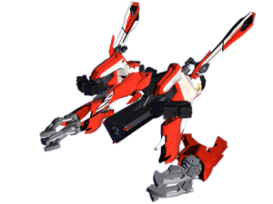
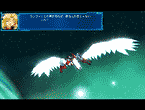
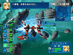
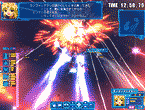

| |

| ●紋章機スペック |
|
■搭乗者：蘭花・フランボワーズ
●全長：36.1m
●全幅：38.2m
●全高：19.4（27.6）m ※カッコ内は基本翼端まで
●通常武装：電磁式ワイヤーアンカー
近距離ミサイル
中型ミサイル
●必殺武器：遠隔アンカー攻撃「アンカークロー」 |
|

 
|
| ●特徴 |
|
紋章機２番機。近接用格闘紋章機。
ミサイル等を標準装備の他、その機体を特徴づけているのは両腕の電磁式ワイヤーアンカーである。 格闘技が得意なランファらしい、身軽さと攻撃力を持った機体である。
パイロットの気力が充実していると両腕のワイヤーアンカーの攻撃力があがり、遠隔操作できるようになる。通称「アンカークロー」。 |
|
|